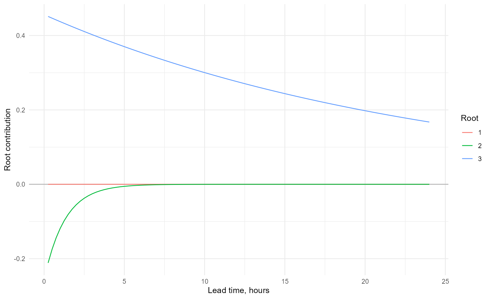

AR and ARMA for Flood Forecasting
Source:vignettes/arma-flood-forecasting.Rmd
arma-flood-forecasting.RmdPurpose
This vignette explains the base AR and ARMA methods used to
post-process flood forecasts in IMFS. It follows the methodology
supplied in ARMA for flood forecasting, Part 1: Base ARMA in
IMFS and connects that methodology to
reach.postproc.
It is intended for flood forecast modellers, analysts and Digital Services staff who need more than awareness. It explains the range of behaviours an AR model can produce, how those behaviours arise and how parameters should be assessed.
ARMA in flood forecasting
Let be an observation and the simulated forecast value. The model error is
At the forecast origin, past errors are known where observations exist. Future errors are unknown. The update projects those future errors and adds them to the simulation:
The AR series can therefore be understood separately from the simulated hydrograph.
Current IMFS implementation
Delft-FEWS supports a full ARMA form. Current Environment Agency operational models use second- or third-order AR terms and no MA terms.
The common third-order recurrence is
Once is known, the relation advances one timestep at a time. Three ordered historic errors are sufficient to project the whole future error series.
Sign conventions
Two sign conventions are common.
| Feature | Deltares convention | Standard signed equation |
|---|---|---|
| Model form | ||
| Relationship | ||
| 2024 defaults | ||
| Internal package form | retained | converted once to Deltares |
deltares <- ar_parameters(
coefficients = c(1.765, -0.72625, -0.040656),
sign_convention = "Deltares"
)
standard <- ar_parameters(
coefficients = c(-1.765, 0.72625, 0.040656),
sign_convention = "Standard"
)
all.equal(
deltares@coefficients,
standard@coefficients
)
#> [1] TRUEThe word standard is not universal across software. Verify the equation rather than relying on coefficient names.
First-order behaviour
For AR(1),
- gives exponential decay.
- gives persistence.
- gives exponential growth.
- changes sign every timestep.
The magnitude controls growth or decay. The sign controls alternation.
Characteristic roots
A higher-order recurrence can be rewritten as
where solve
The roots are fixed by the parameter set. The root weights are determined by the recent error history.
parameters <- default_ar_parameters()
root_information <- roots(parameters, time_step_minutes = 15)
root_table(root_information)
#> root_id root_real root_imaginary root_modulus lag_root_real
#> <int> <num> <num> <num> <num>
#> 1: 3 0.98961490 1.100114e-24 0.98961490 1.010494
#> 2: 2 0.82517187 -1.306909e-24 0.82517187 1.211869
#> 3: 1 -0.04978678 2.067952e-25 0.04978678 -20.085655
#> lag_root_imaginary lag_root_modulus raw_decay_time_steps decay_time_steps
#> <num> <num> <num> <num>
#> 1: -1.123324e-24 1.010494 95.7909755 95.7909755
#> 2: 1.919360e-24 1.211869 5.2038996 5.2038996
#> 3: -8.342810e-23 20.085655 0.3333327 0.3333327
#> effective_decay_time_steps decay_time_hours effective_decay_time_hours
#> <num> <num> <num>
#> 1: 95.7909755 23.94774387 23.9477439
#> 2: 5.2038996 1.30097489 1.3009749
#> 3: 0.2338708 0.08333317 0.0584677
#> oscillation_period_steps oscillation_period_hours is_growing is_persistent
#> <num> <num> <lgcl> <lgcl>
#> 1: Inf Inf FALSE FALSE
#> 2: Inf Inf FALSE FALSE
#> 3: 2 0.5 FALSE FALSE
#> is_oscillating modal_stability lag_stability display_order
#> <lgcl> <fctr> <fctr> <int>
#> 1: FALSE Stable Stable 1
#> 2: FALSE Stable Stable 2
#> 3: TRUE Stable Stable 3
plot_ar(root_information, root_definition = "modal")
Decay and oscillation
A root can be expressed as
with
Positive real roots do not oscillate. Negative real roots have period two. Complex roots occur in conjugate pairs.
For modal roots:
- means decay;
- means persistence;
- means growth.
Reciprocal lag roots are and reverse the inside/outside stability region.
Dependence on the input error series
The roots define possible behaviours. The weights determine how strongly those behaviours appear in a particular forecast.
Steady recent errors often give smooth projections. Sharp changes can require large weights, expose normally minor roots and amplify oscillation. A parameter set should never be judged from one forecast run.
components <- decompose_ar(
parameters,
initial_errors = c(0.20, 0.15, 0.10),
steps = 96L,
time_step_minutes = 15
)
ggplot(
components,
aes(
x = lead_time_hours,
y = contribution_real,
colour = factor(root_number)
)
) +
geom_hline(yintercept = 0, colour = "grey70") +
geom_line() +
theme_minimal() +
labs(x = "Lead time, hours", y = "Root contribution", colour = "Root")
Timing errors
AR is aware of timing error only when that difference is already encoded in the input errors. It cannot anticipate a future shift in the simulated hydrograph.
Where observation has started rising but simulation has not, the update may initially move towards the observation. It does not reliably correct the timing of the later peak.
Zero cut-off in IMFS
A negative projected error can exceed the simulated value and produce a negative unconstrained update. IMFS may impose
The AR series continues to be calculated without that bound. A flat line at zero is not by itself evidence of poor parameters.
Data gaps
Delft-FEWS treats a missing-observation section as another forecast segment. Where too few observed values occur between gaps, previously projected values may contribute to the next initial state. Repeated transitions can create erratic behaviour.
Gaps can arise from:
- telemetry;
- missing simulation data;
- interpolation settings;
- rating curves that are undefined over part of the data range.
Diagnose the source before modifying parameters.
Rated updated series
AR is additive in the domain where it is applied. For nonlinear rating ,
A smooth flow update can therefore look unusual after conversion to level, or vice versa. Compare both domains and confirm where thresholds are defined.
Effects on downstream models
Many updated upstream series become boundaries to downstream hydraulic models. Any growth, oscillation, cut-off artefact or rating distortion can propagate.
Dry-weather decay can also introduce a small artificial rise or fall into a downstream model. The priority remains event behaviour, but model-network consequences should be considered.
Fixed lead-time plots
A fixed lead-time line contains the value that would have been forecast had AR been started a constant number of timesteps earlier.
For a 60-minute lead at a 15-minute timestep:
- move four steps back from the target;
- read the error history available at that origin;
- project AR forward four steps;
- add the projected error to the simulation at the target.
These series underpin performance testing and calibration. They differ from one operational forecast started at a single time.
Parameter assessment
The 2024 project established these tests.
Universally rapid decay
Fail if every root has
Fast secondary roots are acceptable if another root remains useful.
Oscillation
Fail an oscillating root where
Ignore this test where because the oscillation disappears rapidly.
assessment <- assess(
parameters,
maximum_decay_time = 240,
minimum_useful_decay_time = 8,
rapid_decay_exception = 1,
oscillation_ratio = -2 * log(0.1),
decay_measure = "effective",
permitted_orders = c(2L, 3L),
time_step_minutes = 15
)
assessment@summary
#> [1] "Pass. All roots meet the accepted criteria."
assessment_table(assessment)
#> test_id test failed affected_roots
#> <char> <char> <lgcl> <list>
#> 1: order Permitted AR order FALSE
#> 2: a Exponential growth FALSE
#> 3: b Excessive decay time FALSE
#> 4: c All roots decay too quickly FALSE
#> 5: d Unacceptable oscillation FALSE
#> criterion
#> <char>
#> 1: permitted order
#> 2: no growing root
#> 3: maximum decay
#> 4: minimum useful decay
#> 5: oscillation ratioEffective decay time
Oscillation can make initial decay faster than the exponential envelope. Effective decay time solves
State whether an assessment uses exponential or effective decay.
The 2024 default parameters
The defaults are
Their roots provide:
- one contribution on the scale of about one day;
- one contribution on the scale of hours;
- one rapidly decaying negative contribution that handles sharp short-term changes.
Retain at least the stated precision. Small coefficient changes can produce large changes in the longest decay time.
Calibration
IMFS Performance Testing
Automated optimisation does not protect against unacceptable roots. Parameters generated by an automatic method must be assessed independently.
PDM for PCs
PDM for PCs can fit higher-order full ARMA models. Calibration should focus on flood events rather than long records dominated by dry conditions. Avoid truncating coefficients so strongly that root timescales change materially.
Flood Modeller
Flood Modeller’s Gauge Updating Unit is conceptually similar but mathematically distinct. Do not assume its parameters map directly to IMFS AR coefficients.
Manual construction
Root timescales are more interpretable than raw coefficients.
constructed <- ar_parameters_from_timescales(
decay_times = c(96, 5.203171, 1 / 3),
oscillation_periods = c(Inf, Inf, 2),
label = "One-day principal decay"
)
constructed@coefficients
#> a_1 a_2 a_3
#> 1.76500000 -0.72624604 -0.04065607
root_table(roots(constructed))
#> root_id root_real root_imaginary root_modulus lag_root_real
#> <int> <num> <num> <num> <num>
#> 1: 3 0.98963740 -2.019484e-28 0.98963740 1.010471
#> 2: 2 0.82514967 2.019484e-28 0.82514967 1.211901
#> 3: 1 -0.04978707 0.000000e+00 0.04978707 -20.085537
#> lag_root_imaginary lag_root_modulus raw_decay_time_steps decay_time_steps
#> <num> <num> <num> <num>
#> 1: 2.061998e-28 1.010471 96.0000000 96.0000000
#> 2: -2.966026e-28 1.211901 5.2031710 5.2031710
#> 3: 0.000000e+00 20.085537 0.3333333 0.3333333
#> effective_decay_time_steps decay_time_hours effective_decay_time_hours
#> <num> <num> <num>
#> 1: 96.0000000 24.00000000 24.00000000
#> 2: 5.2031710 1.30079275 1.30079275
#> 3: 0.2338711 0.08333333 0.05846776
#> oscillation_period_steps oscillation_period_hours is_growing is_persistent
#> <num> <num> <lgcl> <lgcl>
#> 1: Inf Inf FALSE FALSE
#> 2: Inf Inf FALSE FALSE
#> 3: 2 0.5 FALSE FALSE
#> is_oscillating modal_stability lag_stability display_order
#> <lgcl> <fctr> <fctr> <int>
#> 1: FALSE Stable Stable 1
#> 2: FALSE Stable Stable 2
#> 3: TRUE Stable Stable 3The longest timescale should broadly reflect catchment response while remaining suitable for flood events and the forecast horizon.
Maintenance workflow
flowchart TD
A[Updated forecast issue reported]
B[Obtain operational parameters]
C[Assess roots and timescales]
D{Parameters fail?}
E[Recalibrate or replace]
F[Check input errors]
G[Check gaps and ratings]
H[Check cut-off and model dependencies]
I[Implement through model maintenance]
A --> B --> C --> D
D -- Yes --> E --> I
D -- No --> F --> G --> H --> I
Full ARMA equation
A full ARMA model is
The AR terms retain memory of previous errors. The MA terms represent the response to new residual innovations.
Response functions
The unit AR response is
The full ARMA response is the convolution
response_data <- response_components(
parameters,
ma_parameters = c(-0.5, -0.25, -0.125),
steps = 100L
)
ggplot(response_data, aes(step, response, colour = component)) +
geom_hline(yintercept = 0, colour = "grey70") +
geom_line() +
theme_minimal()
Limitations and future development
Base AR models have fixed timescales. They cannot adapt between wet and dry conditions, anticipate future structure operation or remove observation noise. Their output depends on both forecast origin and recent error history.
These limitations define where judgement remains necessary. They also motivate event-triggered and alternative updating approaches.
Summary
- Model the error, not the river response.
- Preserve the error-sign convention.
- Interpret parameters through roots and timescales.
- Reject growth.
- Assess oscillation in relation to decay.
- Examine multiple input-error histories.
- Diagnose gaps, ratings and cut-offs separately.
- Evaluate performance at fixed lead times.
- Retain sufficient coefficient precision.